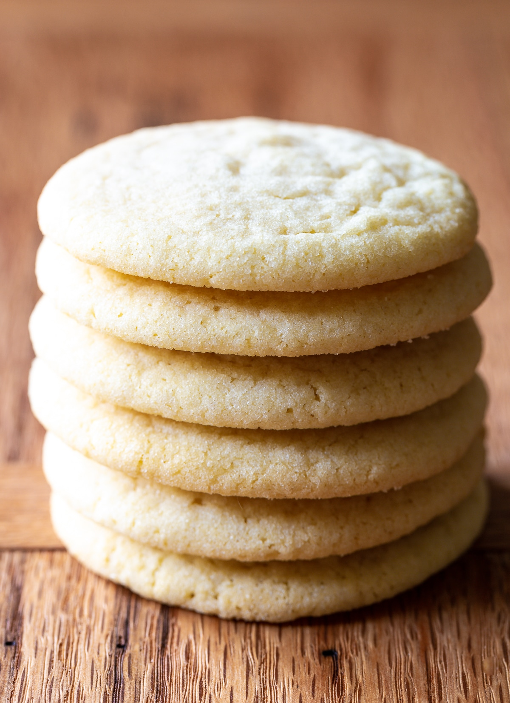

Sugar Cookie Recipe! ( Made Easy )

A super easy sugar cookie recipe!
I think the reason I love sugar cookies so much is they pair so easily with any drink.
(And I am a major tea enthusiast. Good Tea+Good Cookie=Happy me.)
Sugar cookies are so easy to make too! And you can add any topping you want!
Icing? Cool. Sprinkles? Of course! Chocolate chips? I mean yeah but now we are arguably making something else...
Ingredients
[48 Cookies]
- 2 3/4 cups all-purpose flour
- 1 teaspoon baking soda
- 1/2 teaspoon baking powder
- 1 cup butter, softened
- 1 1/2 cups white sugar
- 1 egg
- 1 teaspoon vanilla extract
Steps
- Preheat oven to 375 degrees F (190 degrees C). In a small bowl, stir together flour, baking soda, and baking powder. Set aside.
- In a large bowl, cream together the butter and sugar until smooth. Beat in egg and vanilla. Gradually blend in the dry ingredients. Roll rounded teaspoonfuls of dough into balls, and place onto ungreased cookie sheets.
- Bake 8 to 10 minutes in the preheated oven, or until golden. Let stand on cookie sheet two minutes before removing to cool on wire racks.
- Decorate and top however you like once cool.Enjoy!